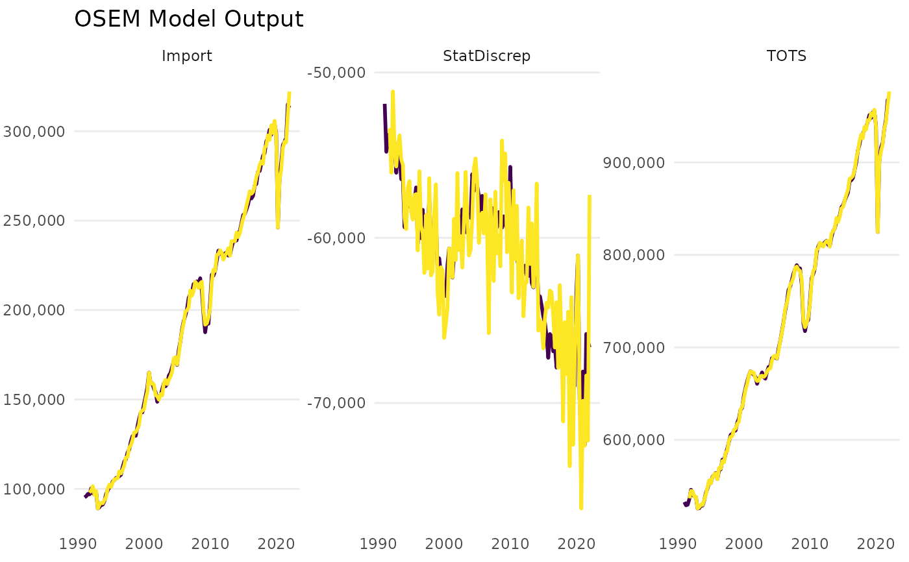

Runs the OSEM model
run_model.RdRuns the OSEM model according to the given specification of modules.
Usage
run_model(
specification,
dictionary = NULL,
inputdata_directory = paste0(getwd(), "/data/raw"),
primary_source = c("download", "local"),
save_to_disk = NULL,
use_logs = "both",
trend = TRUE,
ardl_or_ecm = "ardl",
max.ar = 4,
max.dl = 4,
saturation = c("IIS", "SIS"),
saturation.tpval = 0.01,
max.block.size = 20,
gets_selection = TRUE,
selection.tpval = 0.01,
constrain.to.minimum.sample = TRUE,
keep = NULL,
pretest_steps = FALSE,
present = FALSE,
quiet = FALSE,
plot = TRUE
)Arguments
- specification
A tibble or data.frame with three columns. Column names must be: 'type', 'dependent', and 'independent'. The column 'type' must contain for each row a character of either 'd' (Identity) or 'n' (Definition - i.e. will be estimated). The column 'dependent' must contain the LHS (Y variables) and the column named 'independent' containing the RHS (x variables separated by + and -).
- dictionary
A tibble or data.frame storing the Eurostat variable code in column 'eurostat_code' and the model variable name in 'model_varname'. If
download == TRUEthen the dictionary also requires a column named 'dataset_id' that stores the Eurostat dataset id. WhenNULL, the default dictionary is used.- inputdata_directory
A path to .rds input files in which the data is stored. Can be
NULLifdownload == TRUE.- primary_source
A string. Determines whether
"download"or"local"data loading takes precedence.- save_to_disk
A path to a directory where the final dataset will be saved, including the file name and ending. Not saved when
NULL.- use_logs
To decide whether to log any variables. Must be one of 'both', 'y', 'x', or 'none'. Default is 'both'.
- trend
Logical. Should a trend be added? Default is TRUE.
- ardl_or_ecm
Either 'ardl' or 'ecm' to determine whether to estimate the model as an Autoregressive Distributed Lag Function (ardl) or as an Equilibrium Correction Model (ecm).
- max.ar
Integer. The maximum number of lags to use for the AR terms. as well as for the independent variables.
- max.dl
Integer. The maximum number of lags to use for the independent variables (the distributed lags).
- saturation
Carry out Indicator Saturation using the 'isat' function in the 'gets' package. Needs a character vector or string. Default is 'c("IIS","SIS")' to carry out Impulse Indicator Saturation and Step Indicator Saturation. Other possible values are 'NULL' to disable or 'TIS' or Trend Indicator Saturation. When disabled, estimation will be carried out using the 'arx' function from the 'gets' package.
- saturation.tpval
The target p-value of the saturation methods (e.g. SIS and IIS, see the 'isat' function in the 'gets' package). Default is 0.01.
- max.block.size
Integer. Maximum size of block of variables to be selected over, default = 20.
- gets_selection
Logical. Whether general-to-specific selection using the 'getsm' function from the 'gets' package should be done on the final saturation model. Default is TRUE.
- selection.tpval
Numeric. The target p-value of the model selection methods (i.e. general-to-specific modelling, see the 'getsm' function in the 'gets' package). Default is 0.01.
- constrain.to.minimum.sample
Logical. Should all data series be constrained to the minimum data series? Default is
TRUE.- keep
Character. A string that will be used as regex (in
grepl()) when selection is carried out. This argument therefore requiresgets_selection = TRUE. Variables that match this character will not be selected over (seegetsmfor details).- pretest_steps
Logical. Default is
FALSE. This argument controls whether isat should first be run for SIS in isolation before other saturation methods are added (IIS, TIS). This can lead to better results if there are many IIS identified at the end of the estimation sample/forecast origin. IfTRUEthenisatis first carried out just for SIS (if activated using 'sis = TRUE'), then the SIS breaks are pre-entered to anotherisatestimation but not selected over. After both isat runs, a union model selection is done usinggets.- present
A logical value whether the final OSEM model output should be presented or not.
- quiet
Logical with default = FALSE. Should messages be displayed? These messages are intended to give more information about the estimation and data retrieval process.
- plot
Logical with default = TRUE. Should plots be displayed?
Value
An object of class osem, which is a named list with four elements:
- args
A named list storing the user arguments for the OSEM model.
- module_order_eurostatvars
The original specification with translated variable names to Eurostat codes and arranged in order of estimation.
- module_collection
The above specification with two added columns that store the model object for each module and the dataset used for estimation, including fitted values for the dependent variable.
- full_data
A tibble or data.frame containing the complete original data for the OSEM model and the fitted values of each module.
Examples
spec <- dplyr::tibble(
type = c(
"d",
"d",
"n"
),
dependent = c(
"StatDiscrep",
"TOTS",
"Import"
),
independent = c(
"TOTS - FinConsExpHH - FinConsExpGov - GCapitalForm - Export",
"GValueAdd + Import",
"FinConsExpHH + GCapitalForm"
)
)
# \donttest{
run_model(specification = spec)
#> Dataset query already saved in cache_list.json...
#> Reading cache file /tmp/RtmpN90QV6/eurostat/b1a6002baab7fb27796d86df4c53dad9.rds
#> Table namq_10_a10 read from cache file: /tmp/RtmpN90QV6/eurostat/b1a6002baab7fb27796d86df4c53dad9.rds
#> Dataset query already saved in cache_list.json...
#> Reading cache file /tmp/RtmpN90QV6/eurostat/c6c39fa9ea0f07bf8f64918ffb8ff05f.rds
#> Table namq_10_gdp read from cache file: /tmp/RtmpN90QV6/eurostat/c6c39fa9ea0f07bf8f64918ffb8ff05f.rds
#>
#> --- Estimation begins ---
#> Estimating Import = FinConsExpHH + GCapitalForm
#> Constructing TOTS = GValueAdd + Import
#> Constructing StatDiscrep = TOTS - FinConsExpHH - FinConsExpGov - GCapitalForm - Export

#> OSEM Model Output
#> -----------------------
#>
#> Estimation Options:
#> Sample: 1991-01-01 to 2022-01-01
#> Max AR Considered: 4
#> Estimation Option: ardl
#>
#> Relationships considered:
#> # A tibble: 3 × 3
#> Model `Dep. Var.` `Ind. Var`
#> 1 1 StatDiscrep TOTS - FinConsExpHH - FinConsExpGov - GCapitalForm - Export
#> 2 2 TOTS GValueAdd + Import
#> 3 3 Import FinConsExpHH + GCapitalForm
#>
#>
#> Relationships estimated in the order: 3,2,1
#>
#> Diagnostics:
#> # A tibble: 1 × 8
#> `Dependent Variable` AR ARCH `Super Exogeneity` IIS SIS n
#> <chr> <chr> <chr> <chr> <int> <int> <int>
#> 1 Import 0.246 0.334 <0.001*** 5 0 122
#> # ℹ 1 more variable: `Share of Indicators` <dbl>
# }